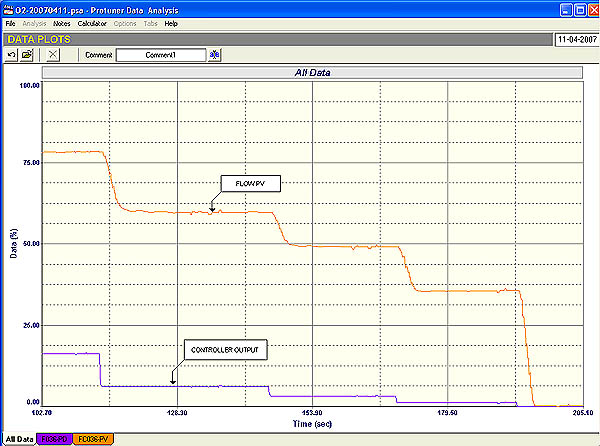
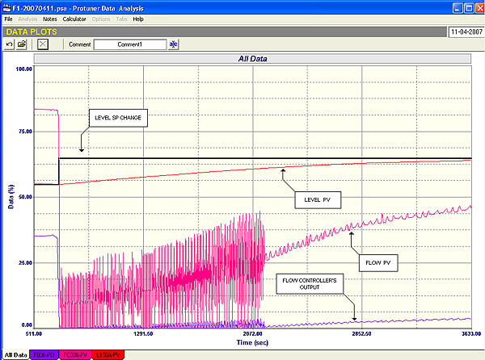

|
| [Home] [About us] [Contact us] [Training] [Optimisation services] [Protuner] |
| [Loop signatures] [Case histories] |
|
Control Loop Case History 97 MONSTERS IN A CHEMICAL PLANT Monsters (a.k.a. difficult problems) are lurking beneath the surface in the strange and sometimes scary world that is the control system in a plant. The water is so murky that plant personnel trying to find their way through it, often cannot see the monsters hiding in the nooks and crannies. Unfortunately the educational institutions that teach control generally talk to their students in the pure clean language of mathematics, which doesn’t recognise murky waters or acknowledge the presence of monsters. As a result, young control engineers and technicians arrive in a plant in a state of virginal and blissful ignorance thinking that they can now apply all the wonderful theory that they have sweated and strived for years to learn, and they hope to really improve plant performance. This reminds me of the story of a dear American friend of mine, Dave, who is today the greatest exponent of control loop optimisation in the world. As a very young engineer with a recently completed M.Sc. in control engineering, his first task when he started working at a large plant was to tune a loop that had been giving trouble. (Remember I always talk about that great fallacy: “Any control problem can be fixed by tuning the controller”). The evening before tackling the task, Dave got out his university notes, and studied up all the good things he had learnt about tuning, including all sorts of complicated maths and frequency plots, and arrived bright and early the next morning in the control room, and told the operator that he was there to tune the errant loop. The operator told him to go ahead. “Before I can do that I need the process transfer function” said Dave. “The what?” responded the puzzled Operator. Dave: “The process transfer function. You know, the equation that describes the dynamics of the process”. Operator (now thoroughly confused): “Dynamics?” Dave: “Yes, dynamics are the way the process output responds to a change on the input”. Operator: “This must be something new. In the past the guys just tuned the loop by playing with the knobs on the controller. Why don’t you pop down to engineering or stores, and see if they can help you?” So the fledgling young control engineer was awakened to the real world, and was sadly disillusioned. When he told me this story years later, he said that he had really been upset. After spending many years studying control, and on the first day at the new job, he discovered that his speciality was the only branch of science where you can’t use the theory behind it. Not being a man to surrender lightly, Dave went on to develop powerful tools that would allow one to optimise loops. These tools do employ a lot of the theory, and make it easy for less skilled practitioners to do this work. In reality the theory is without doubt brilliant. It was originally developed by incredibly clever mathematicians who had probably never seen a process plant. It follows laws of nature, and does in fact work extremely well, provided that everything in the loop is OK. I love to watch perfectly optimised controls working in plants. It never ceases to amaze me how well the theory does work in practice, if everything is set-up correctly. Unfortunately in the real world, very few people understand the practicalities and necessary procedures that must be carried out to get feedback control systems to work properly. It is not just a question of tuning. This is the last thing that should be done. One must firstly understand all aspects of the control, including process aspects, and the type of tuning required. Then one must analyse the loop to uncover problems, to be able to kill any lurking monsters, and also to gain understanding how to go about tuning the controller. Finally one must apply the best tuning to give the response that will meet the control requirements for that particular process. In most plants tuning is carried out as a solution to all problems. It is performed in 98% of all cases world-wide by trial and error, very often by unskilled people, and in the vast majority of cases it leads to extremely poor and inefficient control. The opportunity for improvement in this field is therefore truly vast. I was recently asked to perform some optimisation work in a large chemical plant which has been running for over 15 years. The process engineers had a profound mistrust of the controls. In spite of most of them having completed control courses during their university courses, none of them knew very much about control, and they relied heavily on their Control and Instrumentation (C&I) department. Within a relatively few hours work in the plant I was able to establish that the state of the control was in a very poor condition. Typically most of the loops still had the original default controller settings that had come with the DCS from the manufacturer. (This in a plant that has been running for 15 years!) Many loops were in manual, and most of those running in automatic were so badly detuned that the operators always made changes in manual, and then set the controllers back to automatic when everything was steady again. There didn’t seem to be anyone in the plant who really understood how to make changes to control loops in the DCS. The most the C&I people could do was change the controllers’ parameter values. This state of affairs is really amazing. People try and produce products using incredibly expensive devices like DCS’s, yet do not bother to try and get them to work properly. Yet another fallacy is that computers can do no wrong. “If we have spent millions of Rands or dollars on a highly sophisticated computerised control device, surely it doesn’t need specialised people to make it work properly?” I will show one interesting example of a control system with a monster lurking in it. This was a level control with a cascaded flow loop to look after the valve. The control requirement was that the level be kept as constant as possible at setpoint. Large load changes occurred frequently. The loop was normally run in manual, and was a bane in the life of the operators. (Level loops are integrating processes, and as discussed in many previous articles, integrating processes need to be balanced if they are to stay in equilibrium. If not they run away as they are inherently unstable. Thus if such a loop is in manual, it necessitates the poor old operator having to continually return to the loop every few minutes to see if its running away, and to apply corrections.)  A portion of the open loop test on the cascade flow loop is shown in Figure 1. The first point to note is that the valve is about 3,5 times oversized. This can be seen from the ratio of the size of the change in the PV (process variable) to the size of the step change in the PD (process demand), which caused the change. (This ratio is known as the process gain, which has been covered in many previous articles as well as in the Loop Signature series). Oversized valves will perforce operate much closer to seat, and in this case where there was a fairly low load going through the vessel the valve was operating very close to seat. In the open loop test shown in Figure 1, it can be seen that the PD is being stepped down in smallish steps starting at about 18%. The flow which started at about 78% followed down reasonably well in a fairly linear fashion. However when the PD was at 1% the PV was still at 35%. When the PD was reduced to zero the PV also went to zero in one large step. This is a huge potential for instability if the valve has to control flows down in that region. Obviously there is also something terribly wrong with a valve that changes the flow from 35% to zero on a 1% step. It could be a symptom of a very worn seat. In general it is a fairly well known fact that one should not try and control under normal circumstances with the control valve position below 20%. This is an excellent example why this is so. In this unfortunate loop the balance point of the level was with the flow relatively low, and with the oversized valve working so close to seat it was very easy to get into the low unstable region.  This is nicely illustrated in Figure 2 which shows a closed loop final test with relatively good tuning. A setpoint change was made to increase the level in the tank. The valve which is on the input to the tank, shut off to raise the level quickly. The level started rising nicely but as the valve started opening to restore balance, it moved into the unstable region and the flow loop went completely unstable. This stabilised as soon as the PD got past the 1% opening, and then the control worked well again. Unfortunately there is nothing much one can do in this situation except to replace the valve with a smaller one, or to reduce its trim.A point of note is that the C&I people had completely detuned the flow controller to try and stop the cycling. The controller was so slow that there was no way that the level could be controlled. This is another beautiful example of how people tend to believe that tuning can solve all problems, and never go looking for the monsters lurking beneath the surface. Michael
Brown is a specialist in control loop optimisation, with many years of
experience in process control instrumentation. His main activities are
consulting, and teaching practical control loop analysis and
optimisation. He gives training courses which can be held in clients'
plants, where students can have the added benefit of practising on live
loops. His work takes him to plants all over South Africa, and also to
other countries. He can be contacted at:
|